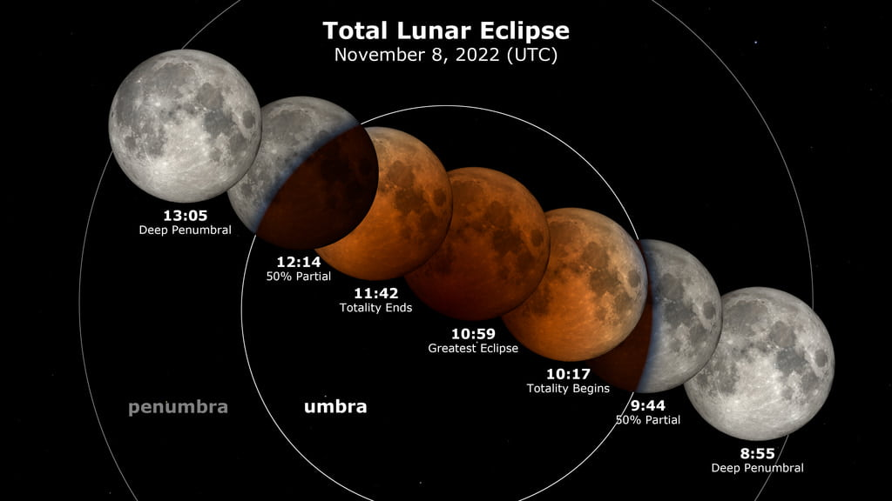
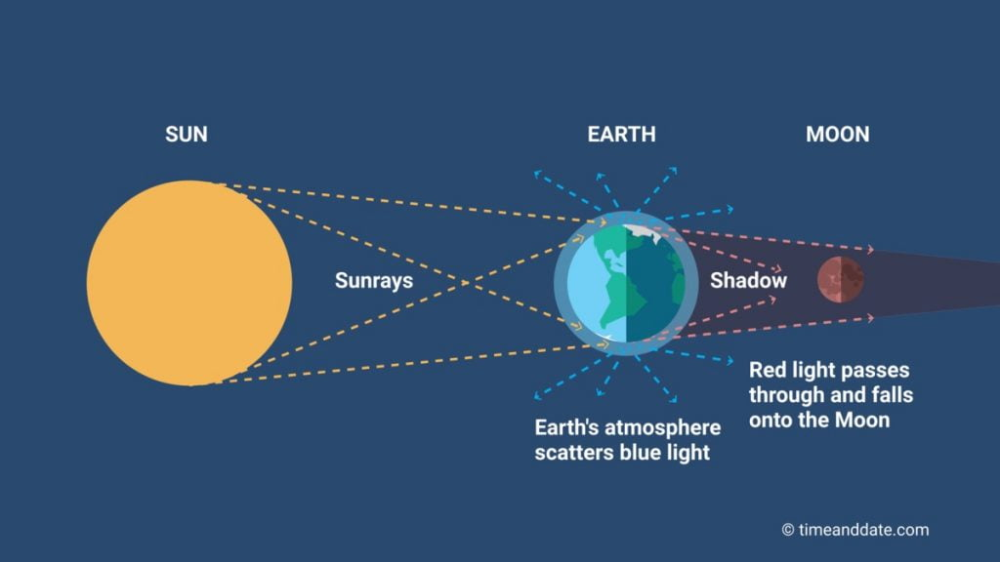
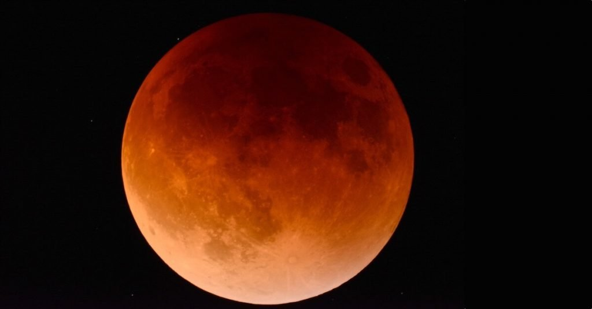
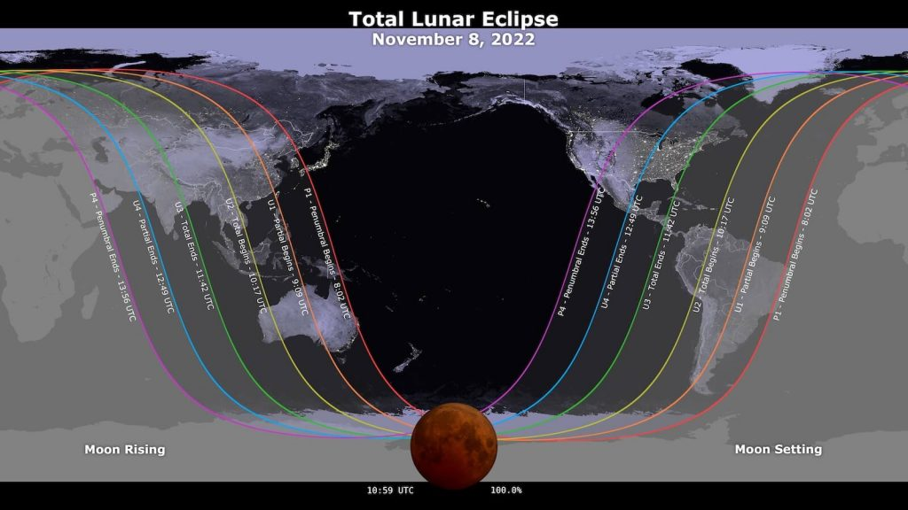

အခုလို လအပြည့် ကြတ်ခြင်းကို နောက်တကြိမ် ထပ်မံ ကြုံတွေ့ဖို့ နောက်ထပ် ၃ နှစ် ထပ်စောင့်ရ မယ်လို့လဲ သိရပါတယ်။ နောက်တကြိမ် လအပြည့် ကြတ်ခြင်းဟာ ၂၀၂၅ ခု မတ်လ ၁၄ ရက် နေ့မှသာ ထပ်မံ တွေ့မြင် ကြရမှာ ဖြစ်ပါတယ်။
လကြတ်တယ် ဆိုတာ တကယ်ကတော့ ကမ္ဘာ့က အရိပ် လပေါ် ကျရောက်ပြီး လမှောင်သွားတာကို ခေါ်တာ ဖြစ်ပါတယ်။ အားလုံး သိကြတဲ့ အတိုင်း လ မှာ ကိုယ်ပိုင် အလင်းရောင် မရှိပဲ နေက ကျရောက်တဲ့ အလင်း ရောင်ပြန် ဟပ်လို့သာ ကျွန်တော်တို့ မြင်ကြ ရတာ ဖြစ်ပါတယ်။
လ ဟာ ကမ္ဘာကို ပတ်နေရာက နေ၊ ကမ္ဘာနဲ့ လတို့ တတန်းထဲ ကျရောက်သွားတဲ့ အချိန် ကမ္ဘာရဲ့ အရိပ်က လပေါ် ကျရောက် သွားတာမို့ ဒီအချိန်မှာ လကြတ်ခြင်း ဖြစ်ပေါ်လာ ရတာပဲ ဖြစ်ပါတယ်။

နေရောင်ခြည်မှာ ပါတဲ့ သက်တန့်ရောင်စဉ် တွေအနက်က အပြာရောင်ဟာ ကမ္ဘာ့ လေထုထဲ ဝင်ရောက်တဲ့ အချိန်မှာ လေထုထဲမှာ ပြန့်ကျဲထွက်သွားပါတယ်။ ဒါပေမယ့် နေရောင်ခြည်မှာ ပါတဲ့ အနီရောင် ကတော့ လေထုထဲ ပြန့်ကျဲမှု သိပ်မရှိပဲ လွတ်လွတ်လပ်လပ် ဖြတ်သန်း သွားနိုင်ပါတယ်။
ဒီ အနီရောင်ခြည် လပေါ်ကို အရောင်ဖြာပြီး ကျရောက် လာတာမို့ ဒီအချိန်မှာ လရဲ့ အရောင်ကို နီရဲနေအောင် တွေ့မြင် ကြရတာပဲ ဖြစ်ပါတယ်။
အခုတကြိမ် လကြတ်ခြင်းကို ကမ္ဘာတဝက်လောက်က လူတွေ တွေ့မြင် ကြရမှာ ဖြစ်ပါတယ်။ အတိအကျ ပြောရရင် မြောက်အမေရိကတိုက်၊ ဩစတြေးလျ တိုက်နဲ့ အာရှ အရှေ့ခြမ်း နိုင်ငံတွေကနေ တွေ့မြင် ကြရမှာ ဖြစ်ပါတယ်။ ဥရောပ တိုက်၊ အာဖရိက တိုက် နဲ့ အရှေ့အလယ်ပိုင်း ဒေသက လူတွေတော့ တွေ့မြင်ကြရမှာ မဟုတ်ပါဘူး။

ဂရင်းနစ် စံတော်ချိန် မနက် 9:09 (မြန်မာ စံတော်ချိန် 3:39 အချိန်မှာတော့ ကမ္ဘာ့ရဲ့ ပင်မအရိပ် လပေါ်ကို စတင် ကျရောက်မှာ ဖြစ်ပါတယ်။ ဒီအချိန်မှာ လရဲ့ အနားစွန်းကနေ လခြမ်းပုံ အရိပ်ဟာ လပေါ်ကို တဖြည်းဖြည်း တိုးဝင်လာတာကို စတင် တွေ့မြင် ကြရမှာ ဖြစ်ပါတယ်။ ဒါပေမယ့် မြန်မာ နိုင်ငံကတော့ တွေ့မြင်ရအုံးမှာ မဟုတ်ပါဘူး။)
လအပြည့် ကြတ်ခြင်း စတင် ဖြစ်ပေါ်ချိန်ဟာ ဂရင်းနစ် စံတော်ချိန် 10:17 (မြန်မာ စံတော်ချိန် ညနေ 4:47) အချိန် ဖြစ်ပေါ်မှာ ဖြစ်ပါတယ်။ ဒီအချိန်အထိ မြန်မာနိုင်ငံက ကြည့်ရင် လဟာ မိုးကုတ်စက်ဝိုင်း အောက်မှာပဲ ရှိနေ အုံးမှာ ဖြစ်ပါတယ်။ ဒီ လအပြည့် ကြတ်ချိန်မှာ လဟာ ရဲရဲနီ သွားမှာ ဖြစ်ပါတယ်။
မြန်မာနိုင်ငံ အတွက် ဒီနေ့ည လထွက်ချိန်ဟာ ညနေ 5:28 အချိန် ဖြစ်ပါတယ်။ ဒီအချိန်မှာ လကို မြင်တွေ့ရဖို့ ခက်ခဲနေ အုံးမှာ ဖြစ်ပါတယ်။

မြန်မာအချိန် ညနေ 6:11 အချိိန်မှာတော့ လအပြည့် ကြတ်ခြင်း ပြီးဆုံးသွားမှာ ဖြစ်ပါတယ်။ လရဲ့ အရောင်ဟာ မူရင်းအရောင်ကို ပြန်ပြောင်းသွားမှာ ဖြစ်ပြီး ကမ္ဘာကနေ လပေါ်ကို ကျရောက်နေတဲ့ ကမ္ဘာရဲ့ အရိပ်ကို ပြန်မြင်လာ ရမှာ ဖြစ်ပါတယ်။
ညနေ ၇ နာရီ ၁၉ မိနစ် အချိန်မှာတော့ လဟာ ကမ္ဘာရဲ့ အတွင်းအရိပ် ကနေ လွတ်မြောက် သွားပါလိမ့်မယ်။ ဒီ အချိန်မှာ ကမ္ဘာရဲ့ အပြင် အရိပ်ဖျော့ လပေါ်ကို ဆက်လက် ကျရောက်နေ အုံးမှာမို့ လရဲ့ အရောင်ကို အနည်းငယ် ခပ်ဖျော့ဖျော့ ဖြစ်နေတာ တွေ့မြင် ကြရမှာ ဖြစ်ပါတယ်။
ည 8:26 အချိန်မှာတော့ လဟာ ကမ္ဘာရဲ့ အရိပ်ကနေ လုံးဝ လွတ်ထွက်သွားပြီး လကြတ်ခြင်း ဖြစ်စဉ်လဲ ပြီးဆုံးသွားမှာ ဖြစ်ပါတယ်။
နောက်တကြိမ် လအပြည့် ကြတ်ခြင်းကိုတော့ ၂၀၂၅ မတ်လ ၁၄ ရက်ကျမှသာ ထပ်မံ တွေ့မြင် ကြရမှာ ဖြစ်ပါတယ်။

Don’t Miss the Total Lunar Eclipse: What You Need To Know | Scitech Daily
Eclipses in Yangon, Myanmar (Rangoon) | Time and Date